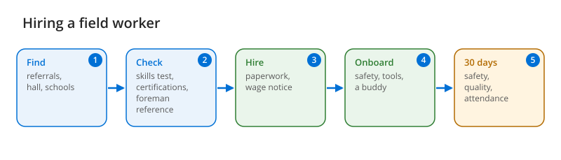

Hiring field crews
In one sentence: hire for safety habits and reliability as much as skills, check the skills on a real task, and have the paperwork, tools and a buddy ready on day one.

Where to find people
- Referrals from your best workers; often the best source.
- Union hiring halls, if you're signatory. See Union or open shop.
- Trade schools and apprenticeship programs. See Apprentices on public works.
- Suppliers and other contractors who hear who's looking.
- Job boards, with a clear description of the work, the pay and the location.
Checking skills
- Ask about the specific work: conduit bending, pulling, terminations, trenching, equipment.
- Ask for certifications that matter: OSHA training, flagger, equipment operator cards, fiber splicing.
- A short skills check on the first day: bend an offset, terminate a conductor, read a plan sheet.
- Call a previous foreman, not just the office.
Day one
- New-hire paperwork (federal and state tax forms, employment eligibility verification, the California wage notice).
- Safety orientation and the Code of Safe Practices. See Safety program as a business system.
- PPE and tools, signed out.
- A named crew lead or buddy for the first weeks.
The first 30 days
Check in at the end of week one and at 30 days: safety, quality, attendance, attitude. Decide early; a poor fit doesn't usually improve on a crew.
Pay
Know the going rate for each classification in your area. On public works, prevailing wage sets the minimum by classification. See Prevailing wage.
PM notes
Your best recruiting tool is a reputation for paying correctly and on time, safe jobs and steady work.
Common mistakes
- Hiring for skills alone and ignoring safety habits.
- No skills check before sending someone alone to a job.
- No one assigned to the new hire.